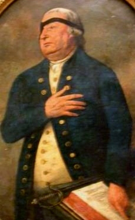

Thomas Webb
This sketch considers the Albany-focused life of Thomas Webb, British soldier and legendary Methodist missionary. The existence of a number of same-named contemporaries as well as future Albany resident and Masonic advocate Thomas Smith Webb complicate our task. All other notables do not seem to be related. 
Although we lack definitive information on his origins, this Thomas Webb appears to have been born in Bath or Salisbury in the west of England in 1724.
As a young man, he joined the Quartermaster Corps of the British army. In October 1754, he was appointed quartermaster of the 48th Regiment. In November 1755, he was commissioned a lieutenant in that regiment. Webb accompanied it to America in 1758 where he supported the seige of Louisburg. He reportedly lost an eye during the assault on Quebec in 1759. Also, in that year, he published A Military Treatise on the Appointments of the Army on the science of waging war.
In August 1760, he received a license to marry spinster Mary Arding (her mother perhaps was a daughter of a New York branch of the Schuyler family). At that time, Webb was identified as a lieutenant of the 48th Regiment. In 1797, a probate document purportedy stated that the late Mary had been "the wife of Captain Thoms Webb" and that her son, Charles Webb, was the heir of Arding's brother, Webb's former associate. Thus, these Webbs had at least one child. We seek documentation regarding subsequent marriages.
While in England in 1765, Webb had been converted to Methodism by the preaching of John Wesley. He then returned to New York where he is presumed to have resumed his military duties. Earlier, he had been promoted to captain but is said to have declined that commission. He is thought to have sold it in America instead. In 1767, reputedly while barracks master and on duty at the Albany fort, he travelled to New York City where he renewed his Methodist zeal, began preaching, and soon became widely known for his sermons which he delivered up and down the Atlantic seaboard while dressed in full uniform and sword. The portrait shown here depicts that legendary appearance near the end of his life. He is widely credited with introducing Methodism to Albany in 1766.
In October 1767, he sought Sir William Johnson's assistance in locating his mandamus tract in the grant received by his captain, William Edmanstone. A month later, Johnson replied amiably that he was unable to help him at that time. Other documented dealings with Johnson seem to have focused exclusively on the Ohio Valley. In 1769, he was one of a number of former soldiers who were partners in a tract of land in or near the Susquehanna and/or "Otago" valleys.
Upon leaving the army and moving from Albany during the late 1760s, Thomas Webb continued evangelical preaching in New York City, on Long Island (the home of his "first" wife), in Pennsylvania, and elsewhere. A number of Methodist congregations make reference to him as their first cleric.
In 1772, he returned to England, preaching in Ireland, London, and elsewhere. He returned to America again, but, at the outbreak of hostilities, he settled in his native Bristol (except for a possible/alleged adventure to Philadelphia where he may have been captured and exchanged - possibly in 1778) where he preached until his death there in December 1796.
Webb's interpreters: Indeed a legendary character of the era of the French & Indian wars, many have been moved to write and even learn about "Captain" Thomas Webb. Truly legendary is the imagination and factual inconsistancies that . . . Well, here are some additional (but not all and not the best/worst/or the most or least balanced of them) from Canada; Stone Fort Consulting; have not yet seen REB; These are mentioned (with admiration and gratitude I must say) because they were useful in shaping my present puzzlement. My goal here is to accurately convey particulars of his life that we consider relevent to his time in Albany.
At this point, we have not been able to uncover definitive information on the particulars of his Albany activities or the particulars of his Albany life. We are at the beginning of our investigation.
Portrait: Adapted from an oil on parchment portrait by Lewis Vaslet and said to have been executed in 1793. It conveys a composite appreciation of his military, missionary, and seventyish character/personna. Collection of the New-York Historical Society. The most comprehensive and recent summary seems to have been compiled by the Reverent Duane Maxey. See also "The Portrait of Captain Thomas Webb" and an interpretative essay by Victor Shepherd.